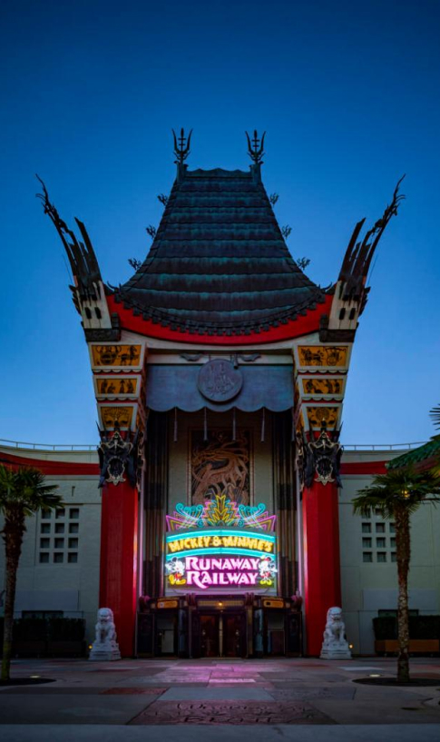
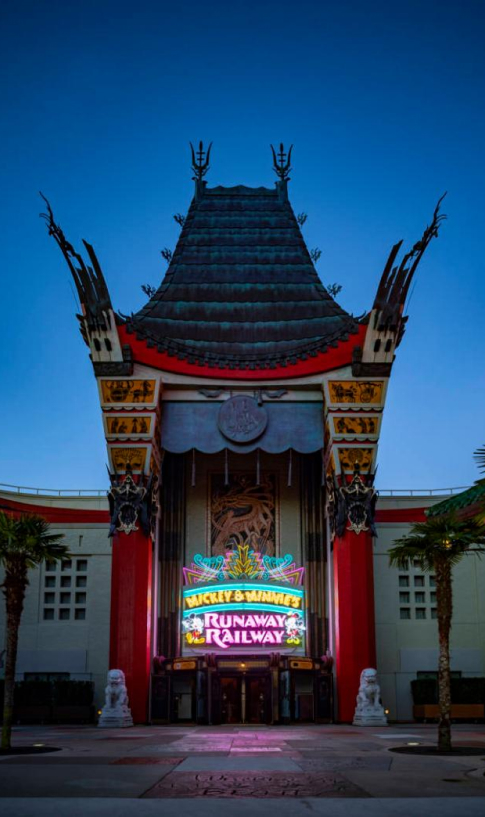

We're in Hollywood Studios!!. Acá nos vamos a encontrar con varias de las mejores franquicias del cine. Indiana Jones, Toy Story, The Muppets, varios clasicos de Pixar, y Star Wars.
Como llegar a Hollywood Studios
Si estamos alojados en un hotel fuera de Disney las opciones son mas escasas, puesto que solo podemos acceder al parque en auto, Uber o Taxi.
Algunos hoteles ofrecen el servicio de transfer gratuito hacia, y desde, los parques. Lamentablemente este servicio solo nos lleva a Epcot. En este caso tendríamos que tomarnos un bus que nos lleve hasta Hollywood Studios.
Si vas en auto pero no estás alojado en un hotel dentro de Disney, recordá que tendrás que pagar el parking, el cual tiene un costo de US$25 por día. Hollywood Studios cuenta con el parking al lado de la entrada al parque, asique en este caso solo queda caminar unos minutos, o tomar el "tram" que te lleva desde el sector de estacionamiento hasta el sector de seguridad.
Si el hospedaje es en un hotel Disney o arriban desde otro parque temático del resort, al auto se agregan las opciones de transporte Disney: autobús (desde todos los hoteles), barco (desde los llamados Epcot Resorts) o el teleférico Disney Skyliner (desde los hoteles Caribbean Beach, Riviera Resort, Pop Century y Art of Animation Resort).
Luego de pasar el security check tendremos que ir por los checkpoints de acceso al parque. Recordamos que estos checkpoints son pequeñas torres que tienen una silueta de Mickey en lo mas alto. En esta parte tendremos que acercar nuestro ticket, o nuestra Magic Band y luego apoyar el dedo en el lector de huellas digitales para que el sistema corrobore que somos los dueños de la entrada con la que estamos ingresando al parque.
Cuanto tiempo para Hollywood Studios
Hace algunos años te hubieramos dicho que con ir un día a Hollywood Studios iba a estar bien, con eso alcanzaba para hacer las atracciones principales, pasear por las calles, mirar tiendas, comer algo y terminar con un show de cierre.
La verdad es que hoy por hoy eso es prácticamente imposible. Lo ideal para este parque sería destinarle dos días completos o, por lo menos, un día y medio si contamos con "park hopper".
A que se debe este cambio? Bien, en el 2018 y 2019, Disney dio un golpe sobre la mesa en Hollywood. Tomó dos franquicias que ya tenían presencia en el parque, y decidió explotarlas al 100%. Así nacieron Toy Story Land y Stars Wars: Galaxy's Edge, y la cosa se descontroló.
En Toy Story Land vamos a encontrarnos con maravillas como "Slinky Dog Dash", una montaña rusa de trayecto relajado, pero con una ambientación y puesta en escena que no vas a poder dejar de mirar alrededor y encontrar detalles (como por ej que cuando vas llegando a la zona donde subis al carro te das cuenta que estás dentro de la caja de un juego). Además de esto, vamos a ver desfile de soldaditos recorriendo las calles, tiendas con un merchandising maravilloso, y podremos conocer personajes como Woody o Buzz.
La joya de la corona abrió en 2019. Star Wars Galaxy's Edge es una locura por donde se lo mire. Desde que la decoración empieza a cambiar y entras en zona Star Wars no paras de sorprenderte. Realemente parece que estuvieramos en "Batuu", o dentro de una de las películas. Con Stromtroopers caminando las calles e interrogando a la gente, Cheewbacca cruzando entre nosotros con su ballesta en la espalda, un gran mercado típico de Tatooine, Kylo-Ren y Rey deambulando por ahí, naves icónicas como las X-Wing y el mismísimo Millennium Falcon, robots, sables de luz, androides, criaturas fantásticas, la inmersión en el universo Star Wars es absoluta.
Encima hay más. Dos atracciones podemos encontrar acá. La primera es Millennium Falcon: Smuglers Run, un simulador alucinante donde podremos pilotear la nave de Han Solo por unos minutos😲. Y la otra Star Wars: Rise of the Resistance, donde literalemente nos metemos dentro de una película cuando nos unimos a la Resistencia y tratamos de huír de un Destructor del Imperio. Esta última atracción no tiene palabras para describirla, es sencillamente increíble lo que logro Disney aquí.
 
